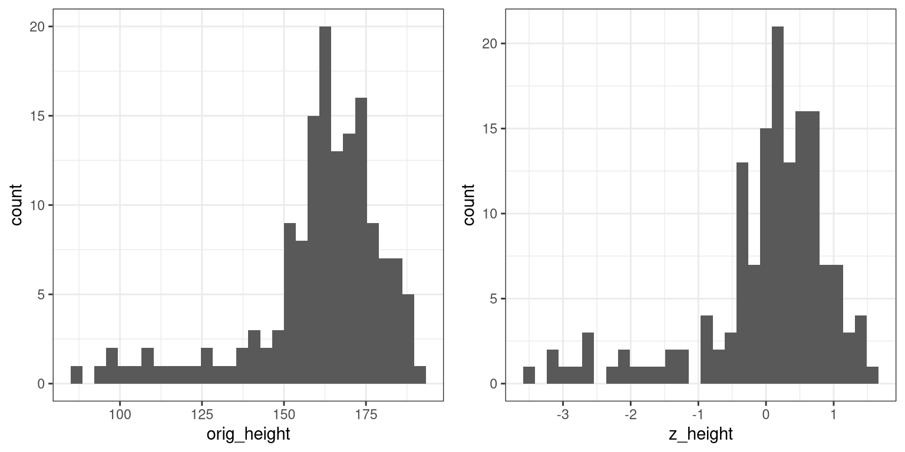
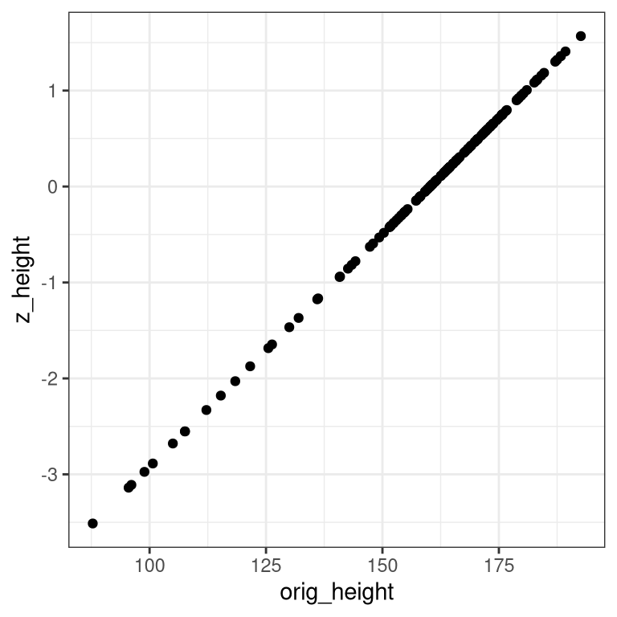

Chapter 4 Fitting simple models using R
In this chapter we will focus on how to compute the measures of central tendency and variability that were covered in the previous chapter. Most of these can be computed using a built-in R function, but we will show how to do them manually in order to give some intuition about how they work.
4.1 Mean
The mean is defined as the sum of values divided by the number of values being summed:
\[ \bar{X} = \frac{\sum_{i=1}^{n}x_i}{n} \]
Let’s say that we want to obtain the mean height for adults in the NHANES database (contained in the data Height). We would sum the individual heights (using the sum() function) and then divide by the number of values:
## [1] NAThis returns the value NA, because there are missing values for some rows, and the sum() function doesn’t automatically handle those. To address this, we could filter the data frame using drop_na() to drop rows with NA values for this variable:
## [1] 160.3516There is, of course, a built-in function in R called mean() that will compute the mean. Like the sum() function, mean() will return NA if there are any NA values in the data:
## [1] NAThe mean() function includes an optional argument called na.rm that will remove NA values if it is set to TRUE:
## [1] 160.35164.2 Median
The median is the middle value after sorting the entire set of values. Let’s use the cleand-up height_noNA variable created above to determine this for the NHANES height data. First we sort the data in order of their values:
Next we find the median value. If there is an odd number of values in the list, then this is just the value in the middle, whereas if the number of values is even then we take the average of the two middle values. We can determine whether the number of items is even by dividing the length by two and seeing if there is a remainder; we do this using the %% operator, which is known as the modulus and returns the remainder:
## [1] 1Here we will test whether the remainder is equal to one; if it is, then we will take the middle value, otherwise we will take the average of the two middle values. We can do this using an if/else structure, which executes different processes depending on which of the arguments are true:
if (logical value) {
functions to perform if logical value is true
} else {
functions to perform if logical value is false
}Let’s do this with our data. To find the middle value when the number of items is odd, we will divide the length and then round up, using the ceiling() function:
if (length(height_sorted) %% 2 == 1){
# length of vector is odd
median_height <-
height_sorted[ceiling(length(height_sorted) / 2)]
} else {
median_height <-
(height_sorted[length(height_sorted) / 2] +
height_sorted[1 + length(height_sorted) / (2)])/2
}
median_height## [1] 165.1We can compare this to the result from the built-in median function:
## [1] 165.14.3 Mode
The mode is the most frequent value that occurs in a variable. R has a function called mode() but if you look at the help page you will see that it doesn’t actually copute the mode. In fact, R doesn’t have a built-in function to compute the mode, so we need to create one. Let start with some toy data:
## [1] "a" "b" "b" "c" "c" "c"We can see by eye that the mode is “a” since it occurs more often than the others. To find it computationally, let’s first get the unique values
To do this, we first create a table with the counts for each value, using the table() function:
## mode_test
## a b c
## 1 2 3Now we need to find the maximum value. We do this by comparing each value to the maximum of the table; this will work even if there are multiple values with the same frequency (i.e. a tie for the mode).
## c
## 3This variable is a special kind of value called a named vector, and its name contains the value that we need to identify the mode. We can pull it out using the names() function:
## [1] "c"Let’s wrap this up into our own custom function:
getmode <- function(v, print_table=FALSE) {
mode_table <- table(v)
if (print_table){
print(kable(mode_table))
}
table_max <- mode_table[mode_table == max(mode_table)]
return(names(table_max))
}We can then apply this to real data. Let’s apply this to the MaritalStatus variable in the NHANES dataset:
## [1] "Married"4.4 Variability
Let’s first compute the variance, which is the average squared difference between each value and the mean. Let’s do this with our cleaned-up version of the height data, but instead of working with the entire dataset, let’s take a random sample of 150 individuals:
First we need to obtain the sum of squared errors from the mean. In R, we can square a vector using **2:
## [1] 63419.37Then we divide by N - 1 to get the estimated variance:
## [1] 425.6333We can compare this to the built-in var() function:
## [1] 425.6333We can get the standard deviation by simply taking the square root of the variance:
## [1] 20.63088Which is the same value obtained using the built-in sd() function:
## [1] 20.630884.5 Z-scores
A Z-score is obtained by first subtracting the mean and then dividing by the standard deviation of a distribution. Let’s do this for the height_sample data.
mean_height <- mean(height_sample)
sd_height <- sd(height_sample)
z_height <- (height_sample - mean_height)/sd_heightNow let’s plot the histogram of Z-scores alongside the histogram for the original values. We will use the plot_grid() function from the cowplot library to plot the two figures alongside one another. First we need to put the values into a data frame, since ggplot() requires the data to be contained in a data frame.
height_df <- data.frame(orig_height=height_sample,
z_height=z_height)
# create individual plots
plot_orig <- ggplot(height_df, aes(orig_height)) +
geom_histogram()
plot_z <- ggplot(height_df, aes(z_height)) +
geom_histogram()
# combine into a single figure
plot_grid(plot_orig, plot_z)
You will notice that the shapes of the histograms are similar but not exactly the same. This occurs because the binning is slightly different between the two sets of values. However, if we plot them against one another in a scatterplot, we will see that there is a direct linear relation between the two sets of values:
